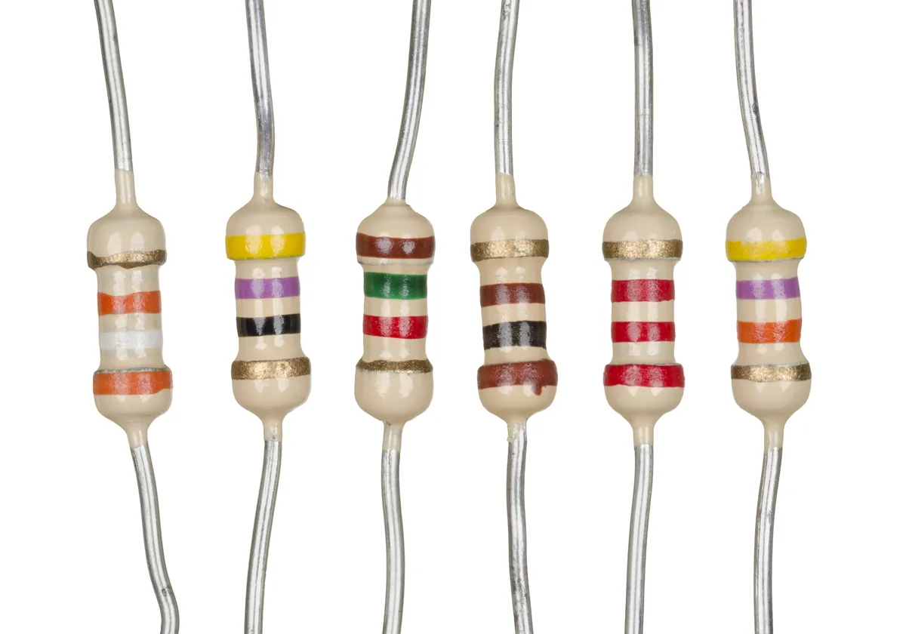
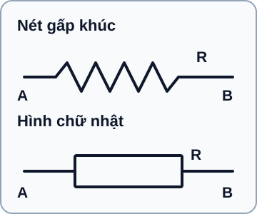

Điện Trở & Mã Màu
Đọc mã màu điện trở, hiểu sai số và giá trị thực tế — kỹ năng tra cứu nhanh không cần máy tính.
- Đọc mã màu 4 vạch và 5 vạch chính xác
- Hiểu sai số (tolerance) ±1%, ±5%, ±10%
- Phân biệt điện trở carbon film và metal film
- Tính dải giá trị thực tế từ giá trị danh định và sai số
- Đo điện trở bằng multimeter và so sánh với mã màu
- Hiểu tại sao điện trở không phải lý tưởng: điện trở ký sinh, nhiệt độ
- Chọn điện trở phù hợp từ bộ điện trở thông dụng (E12, E24)
- Đọc nhãn trên điện trở SMD

Dụng cụ và linh kiện
| Tên | Thông số | Số lượng |
|---|---|---|
| Bộ điện trở đồng bộ | 1Ω → 1MΩ, ¼W, ±5% (E24) — thường đi kèm breadboard kit | 1 bộ |
| Multimeter | Chức năng đo Ω | 1 |
| Breadboard | 830 lỗ | 1 |
1. Điện trở — Linh kiện thụ động số một
Điện trở (Resistor, ký hiệu R) là linh kiện điện tử cản trở sự chuyển động của dòng điện. Giá trị điện trở cho biết "sức cản" đó lớn hay nhỏ — đơn vị là Ohm (Ω), đặt theo Georg Simon Ohm (1789–1854), người phát hiện định luật quan trọng nhất trong điện học.
Điện trở là linh kiện thụ động (passive) — nó không khuếch đại, không tạo ra điện áp, không tạo ra dòng điện. Nó chỉ chuyển đổi năng lượng điện thành nhiệt theo tỉ lệ xác định. Mặc dù đơn giản, điện trở xuất hiện trong gần như mọi mạch điện tử: hạn dòng cho LED, tạo cầu chia áp, đặt điểm làm việc transistor, lọc nhiễu, kết cuối đường truyền...
1.1 Ký hiệu điện trở trong sơ đồ mạch
Trên sơ đồ mạch, điện trở có thể được vẽ bằng nét gấp khúc hoặc hình chữ nhật. Cả hai hình dưới đây biểu diễn cùng một linh kiện R; các đoạn thẳng hai bên là dây nối tới hai nút khác của mạch. Khi đọc một sơ đồ, hãy dựa vào ký hiệu và nhãn linh kiện thay vì suy ra hai loại điện trở khác nhau từ hình dạng.

Mô tả ký hiệu bằng chữ
Ở cả hai hàng, dây bên trái nối đến đầu A, đi qua điện trở R, rồi dây bên phải nối đến đầu B. Hàng trên biểu diễn thân điện trở bằng đường zigzag; hàng dưới biểu diễn bằng hình chữ nhật. Hai hình tương đương về ý nghĩa mạch điện.
1.2 Cấu tạo vật lý điện trở
Điện trở thông dụng trong học tập có dạng trụ nhỏ với hai chân kim loại. Bên trong là lớp vật liệu dẫn điện kém (carbon film hoặc metal film) được phủ lên lõi sứ. Điện trở của lớp này được kiểm soát chính xác khi sản xuất bằng cách điều chỉnh độ dày và chiều dài lớp phủ.
| Loại | Vật liệu | Sai số | Nhiễu | Ứng dụng |
|---|---|---|---|---|
| Carbon Film (CF) | Màng carbon | ±5%, ±10% | Cao hơn | Mạch số, học tập, prototype |
| Metal Film (MF) | Màng Nickel-Chrome | ±0,1% → ±1% | Thấp | Audio, đo lường, mạch analog chính xác |
| Wire-wound | Dây điện trở quấn lõi sứ | ±0,01% → ±1% | Rất thấp | Công suất cao, thiết bị đo chuẩn |
| SMD (0603, 0402...) | Thick/thin film | ±1%, ±5% | Thấp | PCB dán bề mặt, sản xuất hàng loạt |
2. Mã màu điện trở — Hệ thống đọc giá trị
Vì điện trở quá nhỏ để in số, người ta dùng hệ thống vạch màu. Mỗi màu ứng với một chữ số hoặc bội số theo bảng quy ước quốc tế (IEC 60062).
2.1 Bảng mã màu chuẩn
| Màu | Chữ số (D) | Nhân (M) | Sai số (T) | Ghi nhớ |
|---|---|---|---|---|
| Bạc | — | ×0,01 | ±10% | — |
| Vàng | — | ×0,1 | ±5% | Vàng kim quý |
| Đen | 0 | ×1 | — | Không có gì = 0 |
| Nâu | 1 | ×10 | ±1% | Nâu đất = 1 |
| Đỏ | 2 | ×100 | ±2% | Đỏ = 2 |
| Cam | 3 | ×1k | — | Cam = 3 |
| Vàng lá | 4 | ×10k | — | Vàng lá = 4 |
| Xanh lá | 5 | ×100k | ±0,5% | Xanh lá = 5 |
| Xanh dương | 6 | ×1M | ±0,25% | Xanh = 6 |
| Tím | 7 | ×10M | ±0,1% | Tím = 7 |
| Xám | 8 | — | ±0,05% | Xám = 8 |
| Trắng | 9 | — | — | Trắng = 9 |
Câu ghi nhớ tiếng Việt phổ biến: "Đen Nâu Đỏ Cam Vàng Xanh Lá Xanh Dương Tím Xám Trắng" = 0 1 2 3 4 5 6 7 8 9. Hoặc câu tiếng Anh: "Bad Boys Race Our Young Girls But Violet Generally Wins" = Black Brown Red Orange Yellow Green Blue Violet Gray White.
2.2 Đọc mã màu 4 vạch (phổ biến nhất)
Điện trở 4 vạch (carbon film thông thường): Vạch 1 · Vạch 2 · Vạch nhân · Vạch sai số
| Vạch 1 | Vạch 2 | Vạch 3 | Vạch 4 |
|---|---|---|---|
| Nâu: 1 | Đen: 0 | Đỏ: ×100 | Vàng kim: ±5% |
Tính: (1 × 10 + 0) × 100 = 1 000 Ω = 1 kΩ. Với sai số ±5%, khoảng giá trị danh định theo dung sai là 950–1 050 Ω; giá trị đo thực tế còn phụ thuộc dụng cụ và điều kiện đo.
R = (D1 × 10 + D2) × M
Trong đó: D1 = chữ số vạch 1, D2 = chữ số vạch 2, M = hệ số nhân vạch 3
Ví dụ tính toán 1 — Đọc điện trở 4 vạch
| Vạch 1 | Vạch 2 | Vạch nhân | Sai số | Giá trị | Dải thực tế |
|---|---|---|---|---|---|
| Nâu (1) | Đen (0) | Đỏ (×100) | Vàng (±5%) | 1 kΩ | 950–1050 Ω |
| Đỏ (2) | Đỏ (2) | Nâu (×10) | Vàng (±5%) | 220 Ω | 209–231 Ω |
| Cam (3) | Cam (3) | Cam (×1k) | Vàng (±5%) | 33 kΩ | 31,35–34,65 kΩ |
| Xanh lá (5) | Xanh dương (6) | Vàng lá (×10k) | Nâu (±1%) | 560 kΩ | 554,4–565,6 kΩ |
2.3 Đọc mã màu 5 vạch (metal film, độ chính xác cao)
Điện trở 5 vạch: Vạch 1 · Vạch 2 · Vạch 3 · Vạch nhân · Vạch sai số
| Vạch 1 | Vạch 2 | Vạch 3 | Vạch 4 | Vạch 5 |
|---|---|---|---|---|
| Nâu: 1 | Đen: 0 | Đen: 0 | Đỏ: ×100 | Nâu: ±1% |
Tính: (1 × 100 + 0 × 10 + 0) × 100 = 10 000 Ω = 10 kΩ. Với sai số ±1%, khoảng giá trị danh định theo dung sai là 9 900–10 100 Ω.
3. Sai số, giá trị danh định và giá trị thực tế
Sai số (Tolerance) của điện trở là khoảng giá trị mà điện trở thực tế có thể lệch so với giá trị danh định (Nominal Value) ghi trên mã màu. Điện trở ±5% nghĩa là giá trị thực tế nằm trong khoảng 95% đến 105% giá trị danh định.
Ví dụ tính toán 2 — Dải sai số
Điện trở 10 kΩ ±5%:
R_min = 10,000 × (1 – 0,05) = 10,000 × 0,95 = 9,500 Ω
R_max = 10,000 × (1 + 0,05) = 10,000 × 1,05 = 10,500 Ω
Điện trở 10 kΩ ±1% (metal film):
R_min = 10,000 × 0,99 = 9,900 Ω
R_max = 10,000 × 1,01 = 10,100 Ω
Với mạch số (digital), sai số ±5% thường không ảnh hưởng — điện trở hạn dòng LED, pull-up, pull-down không cần chính xác tuyệt đối. Với mạch analog (cầu chia áp cảm biến, bộ khuếch đại, bộ lọc), sai số ±1% trở xuống thường cần thiết. Với thiết bị đo chính xác, cần ±0,1% hoặc tốt hơn.
3.1 Dãy điện trở tiêu chuẩn E12 và E24
Điện trở không được sản xuất ở mọi giá trị. Chúng được sản xuất theo các dãy tiêu chuẩn được gọi là dãy E (E-series), được thiết kế sao cho khoảng giữa các giá trị liền kề gần bằng sai số của chúng — đảm bảo không có khoảng trống.
| Dãy | Sai số | Số giá trị/thập phân | Dùng khi nào |
|---|---|---|---|
| E6 | ±20% | 6 giá trị | Hiếm gặp, linh kiện cũ |
| E12 | ±10% | 12 giá trị | Điện trở carbon, học cơ bản |
| E24 | ±5% | 24 giá trị | Điện trở carbon thông dụng nhất |
| E48 | ±2% | 48 giá trị | Metal film chính xác |
| E96 | ±1% | 96 giá trị | Metal film ±1% |
Dãy E24 (24 giá trị trong mỗi thập phân từ 1 đến 10):
3.3 3.6 3.9 4.3 4.7 5.1 5.6 6.2 6.8 7.5 8.2 9.1
Nhân với 10, 100, 1k, 10k, 100k, 1M để có giá trị thực. Ví dụ: 2,2 kΩ, 4,7 kΩ, 10 kΩ đều là giá trị E24 phổ biến.
4. Đọc nhãn điện trở SMD
Điện trở dán bề mặt (SMD — Surface Mount Device) không dùng mã màu mà in số trực tiếp. Có hai hệ thống:
4.1 Hệ thống 3 chữ số (sai số ±5%)
Format: ABС → giá trị = AB × 10^C
| Nhãn SMD | Giá trị | Giải thích |
|---|---|---|
100 | 10 Ω | 10 × 10⁰ = 10 |
220 | 22 Ω | 22 × 10⁰ = 22 |
471 | 470 Ω | 47 × 10¹ = 470 |
103 | 10 kΩ | 10 × 10³ = 10,000 |
474 | 470 kΩ | 47 × 10⁴ = 470,000 |
4.2 Hệ thống 4 chữ số (sai số ±1%)
Format: ABCD → giá trị = ABC × 10^D
Ví dụ: 1001 = 100 × 10¹ = 1000 Ω = 1 kΩ; 4992 = 499 × 10² = 49.9 kΩ
5. Thực hành: Đo và phân loại bộ điện trở
Lấy ngẫu nhiên 10 điện trở từ bộ assorted. Đặt lên mặt phẳng trắng.
Với mỗi điện trở: đọc mã màu 4 vạch, tính giá trị danh định và ghi vào cột "Lý thuyết."
Dùng multimeter đo giá trị thực tế, ghi vào cột "Đo được."
Tính sai số:
Sai số% = |R_đo – R_lý thuyết| / R_lý thuyết × 100%Đánh giá: nếu sai số ≤ 5% → Pass; nếu > 5% → Fail hoặc đọc mã màu sai.
| Điện trở | Mã màu | Lý thuyết (Ω) | Đo được (Ω) | Sai số (%) | P/F |
|---|---|---|---|---|---|
| R1 | ___·___·___·___ | _____ | _____ | _____ | _____ |
| R2 | ___·___·___·___ | _____ | _____ | _____ | _____ |
| R3 | ___·___·___·___ | _____ | _____ | _____ | _____ |
| R4 | ___·___·___·___ | _____ | _____ | _____ | _____ |
| R5 | ___·___·___·___ | _____ | _____ | _____ | _____ |
6. Debug — Lỗi thường gặp khi đọc mã màu
| Lỗi | Nguyên nhân | Kiểm tra | Xử lý |
|---|---|---|---|
| Đọc sai 5x giá trị (ví dụ đọc 10kΩ thay vì 2kΩ) | Cầm ngược điện trở, đọc từ phải sang trái | Vạch sai số luôn ở xa hơn — nâu/đen/đỏ là vạch chữ số, vàng/bạc là sai số | Xoay điện trở 180°, đọc lại từ đầu sai số ở bên phải |
| Nhầm màu cam và đỏ dưới ánh đèn vàng | Ánh sáng ảnh hưởng đến nhận diện màu | Đo bằng multimeter để xác nhận | Dùng ánh sáng trắng; đo đối chiếu khi nghi ngờ |
| Đo được OL (overload) khi đo điện trở | Thang đo nhỏ hơn giá trị điện trở | Thử chuyển lên thang cao hơn | Chọn thang phù hợp: <1kΩ → 2kΩ; <10kΩ → 20kΩ... |
A1: Vàng lá(4) · Tím(7) · Đỏ(×100) · Vàng(±5%) = 47 × 100 = 4,700 Ω = 4,7 kΩ ±5%
A2: Đỏ(2) · Đỏ(2) · Vàng lá(×10k) · Vàng(±5%) = 22 × 10,000 = 220,000 Ω = 220 kΩ ±5%
A3: Nâu(1) · Đen(0) · Lá(5) · Lá(×100k) · Nâu(±1%) = 105 × 100,000 = 10,500,000 Ω = 10,5 MΩ ±1%
A4: Xanh lá(5) · Xanh dương(6) · Cam(×1k) · Vàng(±5%) = 56 × 1000 = 56 kΩ ±5%
A5: Cam(3) · Trắng(9) · Đen(0) · Nâu(×10) · Nâu(±1%) = 390 × 10 = 3,900 Ω = 3,9 kΩ ±1%
B6: Dải cho phép: 47k × 0,95 = 44,650 Ω đến 47k × 1,05 = 49,350 Ω. Đo 44,000 Ω < 44,650 Ω → Không đạt sai số ±5% (có thể điện trở lỗi hoặc đọc mã màu sai).
B7: Điện trở ±5% có thể sai lên đến 500Ω (10kΩ × 5%). Với mạch op-amp cần độ chính xác cao, sai số này gây offset điện áp và sai số khuếch đại. Giải quyết: đo thực tế và chọn điện trở gần nhất ±1%; hoặc mua điện trở metal film ±1%.
B8: "472" = 47 × 10² = 4,700 Ω = 4,7 kΩ. Dải ±5%: 4,465 kΩ → 4,935 kΩ.